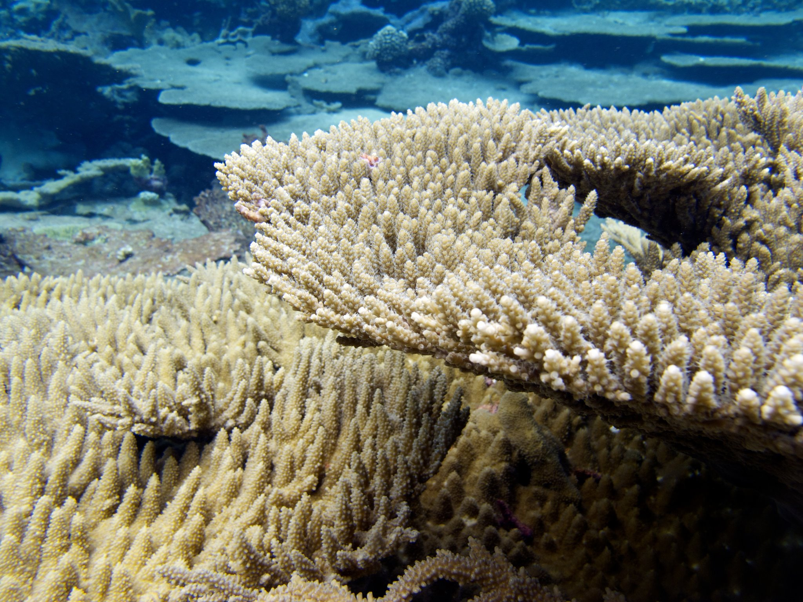
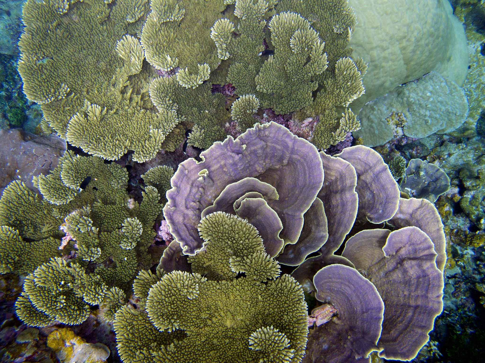
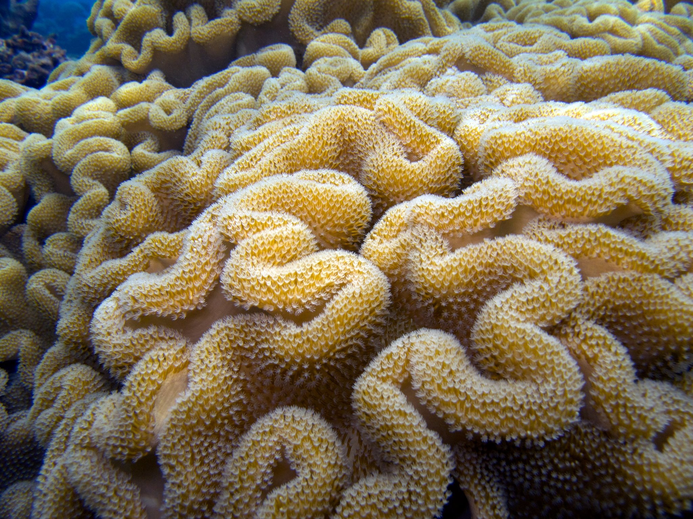

EXPORTERS
We’ve reached the final stop on a journey that started on the opposite side of the globe. Our fish has traveled X thousand miles and changed hands seven times before reaching its new home in the aquarium of a hobbyist in Colorado Springs, Colorado. At 6,500 ft in the Rocky Mountains, Colorado Springs may be the last place that you’d expect to find a blue tang. Yet, there is a thriving hobbyist community in the region. We talked with these aquarists to hear how they keep fish so far from the ocean, and how many steps back in the supply chain they understand.
-

Double C Exporters
One of the largest saltwater fish exporters in Indonesia
“The sea, once it casts its spell, holds one in its net of wonder forever.”
–Jacques-Yves Cousteau
Approaching the home of one of these aquarists, we saw to see the telltale blue glow of a saltwater aquarium coming from the garage. We met Chris Bueschel, who has been in the hobby for nearly 15 years. After starting with a freshwater aquarium, he quickly moved to saltwater tanks, culminating in a 600-gallon tank with live coral and fish from reefs. In order to successfully keep these reef-dwelling organisms alive in a captive environment, the aquarist must recreate the conditions and complexity of a natural reef inside of a glass box. This is a gear-intensive endeavor, requiring high-intensity blue spotlights to mimic the sun, powerful pumps to simulate water flow, carefully constructed salt mixtures to recreate water chemistry, foam-fractionating protein skimmers to recreate frothy waves, and hundreds of pounds of rock shipped from reefs around the globe in order to seed the tank with the appropriate microbiome. These aquariums are a far cry from the goldfish bowl, trending closer to life-support systems for the alien organisms that they sustain.
-

Coral Reef Placeholder
Text on reefs -

Coral Reef Placeholder 2
Text tk -

More Reefs
More placeholder -

Last Reefs
More placeholder